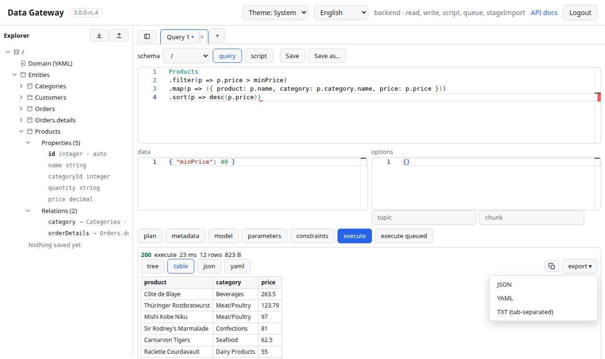

UI
Eine Schritt-für-Schritt-Tour, von der Anmeldung bis zu einem Diagramm, finden Sie unter Erste Schritte.
Das Gateway stellt eine Weboberfläche bereit, um seine Schemas zu erkunden und abzufragen: einen Explorer der Schemas und ihrer Entitäten, das Formular jeder Entität, Abfrage-Tabs mit Autovervollständigung der Domäne, gespeicherte Abfragen und Diagramme der Domäne. Sie eignet sich, um Abfragen auszuprobieren, die Sprache zu lernen und zu prüfen, was ein Agent über MCP tut.
transports:
http:
port: 8080
ui: { enabled: true } # off by default
Sie ist unter http://localhost:8080/ui/ erreichbar (mit basePath: /data-gateway unter /data-gateway/ui/). Sie wird
vom selben Transport http bereitgestellt und ruft dessen REST API mit den eingegebenen Zugangsdaten auf:
Sie hat keinen anderen Zugriff.
Seiten
Startseite. Was das Data Gateway ist, seine Version, die Schemas der Instanz mit ihrem Zustand (ready, error, …),
ein Link zur API-Dokumentation (Swagger) und die Schaltfläche Anmelden.

Anmeldung. Die Authentifizierung der Instanz und die Zugangsdaten:
| Authentifizierung | Fragt ab |
|---|---|
| API-Key | den Header (Standard X-Api-Key) und den Key |
| Bearer-Token | das Token |
| Basic | den Benutzer und das Passwort |
| Keine | nichts |
Die Schaltfläche Anzeigen / Verbergen zeigt das Eingegebene an. Die Zugangsdaten werden gegen ein Schema geprüft (/whoami):
Falsche Zugangsdaten werden gemeldet, und die Seite bleibt bestehen. Die Zugangsdaten werden nur in diesem
Browser-Tab gehalten: Durch Schließen oder Neuladen werden sie vergessen, und sie werden nie gespeichert.

Abfragen. Der Arbeitsbereich nach der Anmeldung: oben der Name und die Berechtigungen der Zugangsdaten, die API-Dokumentation und Abmelden (zurück zur Startseite).
Oben auf jeder Seite gibt es zwei Auswahlfelder:
- Design: System (wie das Betriebssystem), Hell oder Dunkel.
- Sprache: English, Español, Português, Français, Italiano, Deutsch, Nederlands, Català, Galego, Euskara.
Beide merkt sich der Browser.

Explorer
Links die Schemas der Instanz. Seine Größe lässt sich durch Ziehen am Rand ändern, und er lässt sich mit der Panel-Schaltfläche der Tab-Leiste ausblenden. Für jedes Schema:
- Domäne (YAML). Die Domäne des Schemas (Entitäten, Eigenschaften, Beziehungen, Schlüssel, Enums) in einem schreibgeschützten Editor mit Syntaxhervorhebung, Suche und Einklappen. Er zeigt nur die Domäne: nie die Quellen, die Verbindungen oder den Rest der Konfiguration.
- Entitäten. Jede Entität klappt auf in:
- Eigenschaften mit ihren Typen (der Primärschlüssel fett);
- Beziehungen mit der verbundenen Entität und der Kardinalität (
customer → Customers · N — 1); die Schaltfläche Öffnen einer Beziehung öffnet die verbundene Entität. Die Schaltfläche Öffnen (↗) einer Entität, ein Doppelklick oder Enter öffnen ihr Formular.
- Was gespeichert ist im Schema: Ordner, Abfragen und Diagramme (siehe unten).

Entitätsformular
Wie eine Tabelle in einer Datenbank-IDE, in einem eigenen Tab, mit diesen Abschnitten:
| Abschnitt | Zeigt |
|---|---|
| Eigenschaften | jede Eigenschaft: Typ (oder Enum), Länge, Pflichtfeld, Primärschlüssel (und eindeutig), Autoinkrement, Standardwert, die Entität und Eigenschaft, auf die ein Fremdschlüssel verweist (ein Link dorthin) sowie ihre Lese-/Schreibausdrücke |
| Beziehungen | ihre Beziehungen (Name, Typ, Entität, from, to, Kardinalität, schwach) und Referenziert von: die Beziehungen anderer Entitäten, die auf sie verweisen; jede Entität ist ein Link zu ihrem Formular |
| Schlüssel und Indizes | Primärschlüssel, eindeutiger Schlüssel, Indizes mit ihren Feldern, Constraints mit ihrer Meldung und Bedingung |
| Daten | ihre Zeilen in einer Tabelle, schreibgeschützt, 50 pro Seite, mit Zurück / Weiter; sie können wie jedes Ergebnis kopiert und exportiert werden |
| Diagramm | die Entität und ihre Nachbarn |
Die Schaltfläche Abfragen öffnet einen Abfrage-Tab mit Entity.page(1, 10).


Abfragen
Jede Abfrage ist ein Tab mit eigenem Schema, Text, Daten, Optionen und Ergebnis; beim Wechseln der Tabs geht nichts verloren. Ein Tab wird mit +, aus einer Entität (Abfragen) oder aus einer gespeicherten Abfrage geöffnet und mit seinem × geschlossen.
- Editor mit Autovervollständigung der Domäne des Schemas (Entitäten, Eigenschaften, Beziehungen und Funktionen)
und den beim Tippen im Text markierten Fehlern von λORM. Modus: Abfrage oder Skript (Skripte nur, wenn das Schema
sie aktiviert hat und die Zugangsdaten
scriptbesitzen). - Daten und Optionen (JSON) und für Ausführungen in der Warteschlange das Topic und der Chunk.
- Aktionen:
plan,metadata,model,parameters(füllt die Daten mit den Variablen der Abfrage),constraints,execute(Strg+Enter),execute queuedund im Skriptmodusexecute script. Eine Aktion, die die Zugangsdaten nicht verwenden dürfen, ist deaktiviert, und ihr Tooltip nennt den Grund. - Ergebnis: Status, Operation, Zeit, Zeilen und Größe sowie vier Ansichten: Baum, Tabelle (wenn das
Ergebnis eine Liste von Zeilen ist), JSON und YAML. Baum und Tabelle zeigen bis zu 200 Zeilen; die Exporte
enthalten alle.
- Das Kopieren-Symbol kopiert das Angezeigte (die Tabelle als tabulatorgetrennten Text, bereit zum Einfügen in eine Tabellenkalkulation).
- exportieren lädt das gesamte Ergebnis als JSON, YAML oder TXT (tabulatorgetrennt) herunter.
- Verlauf der letzten Abfragen jedes Schemas, um eine davon zurückzuholen.



Gespeicherte Abfragen und Diagramme
Das + eines Schemas oder eines Ordners fügt hinzu:
- Neuer Ordner. Ordner lassen sich verschachteln, um das Gespeicherte zu organisieren.
- Neue Abfrage. Ein Abfrage-Tab, dessen Ordner dieser ist.
- Neues Diagramm. Siehe Diagramme.
Jedes gespeicherte Element hat einen Namen und eine Beschreibung (angezeigt, wenn der Mauszeiger darüber liegt). Seine Zeile hat Bearbeiten (Name, Beschreibung und Ordner) und Löschen (mit Bestätigung; ein Ordner nimmt seinen Inhalt mit). Elemente werden durch Ziehen auf einen Ordner oder auf das Schema verschoben. Zwei Elemente derselben Art können in einem Ordner nicht denselben Namen haben.
Ein Abfrage-Tab hat Speichern (Strg+S) und Speichern unter…: Beim ersten Speichern werden Name, Beschreibung und Ordner abgefragt. Ein • im Tab kennzeichnet nicht gespeicherte Änderungen; nach dem Speichern steht dort gespeichert. Wird eine bereits geöffnete gespeicherte Abfrage geöffnet, wechselt die UI zu ihrem Tab.

Diagramme
Ein Diagramm der Domäne zeigt die ausgewählten Entitäten als Kästen, mit ihren Eigenschaften, Typen, PK und FK (die Pflichtfelder fett), und die Beziehungen als Linien mit ihrer Kardinalität (1 — N, 1 — 1); eine Vererbung ist eine gestrichelte Linie.
Neues Diagramm fragt nach Name, Beschreibung, Ordner und den Entitäten: Sie werden gesucht, einzeln angehakt oder mit Nachbarn hinzufügen ergänzt (die mit den ausgewählten verbundenen Entitäten).

In einem Diagramm:
| Aktion | Wie |
|---|---|
| Anordnen | automatisch beim Öffnen (die Kästen werden von ELK platziert); neu anordnen stellt dies wieder her |
| Einen Kasten verschieben | ziehen |
| Eine Linie verschieben | seitlich ziehen; ihre Enden bleiben an den Zeilen der Felder, die sie verbindet; ein Doppelklick setzt sie zurück |
| Eine Entität entfernen | das × ihres Kastens (angezeigt, wenn der Mauszeiger darüber liegt) oder den Kasten anklicken und Entf drücken |
| Entitäten hinzufügen oder entfernen | Entitäten… |
| Namen der Beziehungen | Beziehungsnamen |
| Nur die Namen der Entitäten | nur Namen |
| Zoomen und verschieben | das Mausrad; den Hintergrund ziehen; einpassen zeigt alles |
| Eine Entität öffnen | Doppelklick auf ihren Kasten |
| Exportieren | SVG oder PNG |
Das Diagramm wird (mit Speichern oder Strg+S) mit der Position jedes Kastens und jeder Linie, der Namensoption und den Entitäten gespeichert.

Wo gespeichert wird
Was gespeichert wird (Ordner, Abfragen, Diagramme), bleibt im Browser, in seiner IndexedDB, getrennt nach Gateway und nach Zugangsdaten: Was mit einem Zugang gespeichert wird, ist mit einem anderen nicht sichtbar. Dafür wird nur der Name der Zugangsdaten verwendet, nie deren Secret.
- Es liegt in diesem Browser auf diesem Gerät: Ein anderer Browser oder ein anderes Gerät sieht es nicht.
- Es geht verloren, wenn die Websitedaten des Browsers gelöscht werden. Der Browser wird gebeten, es zu behalten, und der Explorer exportiert alles in eine JSON-Datei (⤓) und importiert es wieder (⤒), wobei es zum Vorhandenen hinzugefügt wird oder es ersetzt: eine Sicherung, eine Möglichkeit, es in einen anderen Browser zu übertragen oder mit jemandem zu teilen.
- In einem Browser, der kein Speichern erlaubt (manche privaten Fenster), weist der Explorer darauf hin: Das Gespeicherte bleibt nur erhalten, bis die Seite geschlossen wird.
In Ihrer eigenen Anwendung
Die UI ist mit @lambdaorm/ui gebaut, einer Bibliothek von
React-Komponenten, die jede Webanwendung gegen ein Data Gateway verwenden kann:
npm install @lambdaorm/ui react react-dom
import { Workspace } from '@lambdaorm/ui'
import '@lambdaorm/ui/styles.css'
<Workspace
baseUrl="https://gateway.example.com" // the http transport of the gateway
headers={() => ({ 'X-Api-Key': key })} // how to authenticate; the library keeps no credential
locale="es"
theme="dark"
workspaceKey={`gateway.example.com|${user}`} // separates what is saved
/>
| Komponente | Was sie ist |
|---|---|
Workspace |
der gesamte Arbeitsbereich: Explorer, Entitätsformulare, Abfragen, gespeicherte Elemente und Diagramme |
QueryWorkbench |
ein Abfrage-Editor mit seinen Aktionen und seinem Ergebnis |
QueryTabs |
mehrere Workbenches in Tabs |
DomainDiagram |
ein Diagramm der Domäne (eine Entität und ihre Nachbarn, das ganze Modell oder ausgewählte Entitäten) |
EntityView |
das Formular einer Entität |
ResultViewer |
ein Ergebnis als Baum, Tabelle, JSON oder YAML, mit Kopieren und Export |
Das Gespeicherte kann an einem anderen Ort als im Browser abgelegt werden, indem store übergeben wird (ein
WorkspaceStore, zum Beispiel ein eigenes Backend).